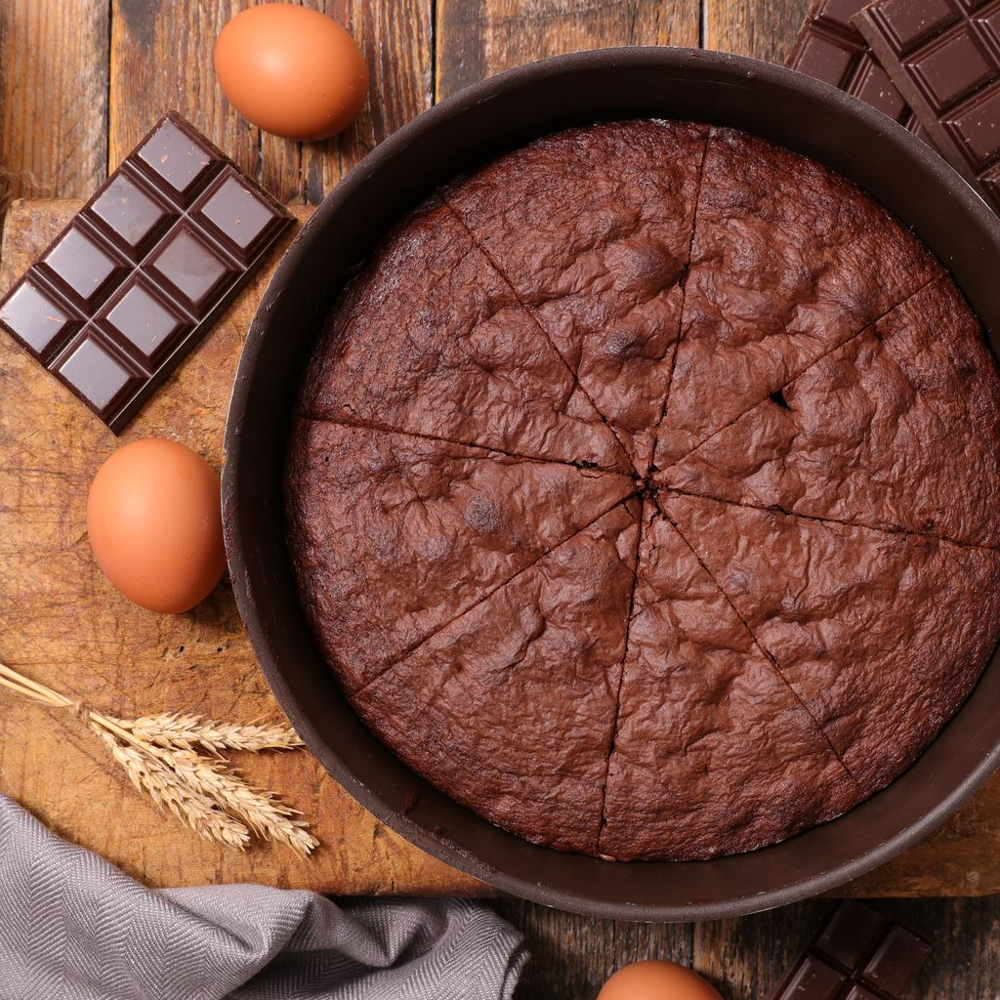

Gâteau au chocolat

Description
Rien de tel qu'un délicieux gâteau au chocolat pour satisfaire nos papilles et réchauffer nos cœurs. Cette recette vous emmènera dans un voyage gustatif chocolaté, avec une texture moelleuse et un goût intense. Préparez-vous à épater vos convives avec ce dessert irrésistible, qui ne manquera pas de les combler de bonheur. Sortez vos ustensiles de cuisine et laissez-moi vous guider à travers les étapes simples pour créer ce chef-d'œuvre chocolaté.
Ingrédients (pour 4 personnes)
- 200 g de chocolat noir
- 150 g de beurre
- 150 g de sucre
- 4 œufs
- 100 g de farine
- 1 cuillère à café de levure chimique
- 1 pincée de sel
- 1 cuillère à café d'extrait de vanille (facultatif)
- Sucre glace (pour saupoudrer, facultatif)
Étapes
- Préchauffez votre four à 180°C (thermostat 6) et graissez un moule à gâteau de taille appropriée.
- Faites fondre le chocolat noir et le beurre ensemble dans un bain-marie ou au micro-ondes. Remuez jusqu'à obtenir un mélange lisse et homogène. Laissez refroidir légèrement.
- Dans un grand bol, battez les œufs et le sucre jusqu'à ce que le mélange soit bien mousseux. Vous pouvez utiliser un batteur électrique pour faciliter la tâche.
- Ajoutez le mélange de chocolat fondu et de beurre refroidi dans le bol contenant les œufs et le sucre. Mélangez bien jusqu'à obtenir une consistance homogène.
- Dans un autre bol, tamisez la farine, la levure chimique et le sel. Ajoutez ce mélange sec à la préparation au chocolat. Mélangez délicatement avec une spatule jusqu'à ce que tous les ingrédients soient bien incorporés. Veillez à ne pas trop mélanger pour éviter de rendre le gâteau trop dense.
- Si vous le souhaitez, ajoutez l'extrait de vanille à la pâte et mélangez-le doucement.
- Versez la pâte dans le moule préparé et égalisez la surface avec une spatule.
- Placez le moule au centre du four préchauffé et faites cuire pendant environ 25 à 30 minutes. Pour vérifier la cuisson, insérez un cure-dent dans le gâteau. S'il en ressort avec quelques miettes collantes, le gâteau est prêt. Ne le surcuisez pas pour éviter qu'il ne devienne sec.
- Sortez le gâteau du four et laissez-le refroidir dans le moule pendant quelques minutes, puis démoulez-le délicatement sur une grille et laissez-le refroidir complètement.
- Une fois refroidi, vous pouvez saupoudrer le gâteau de sucre glace pour une touche décorative.